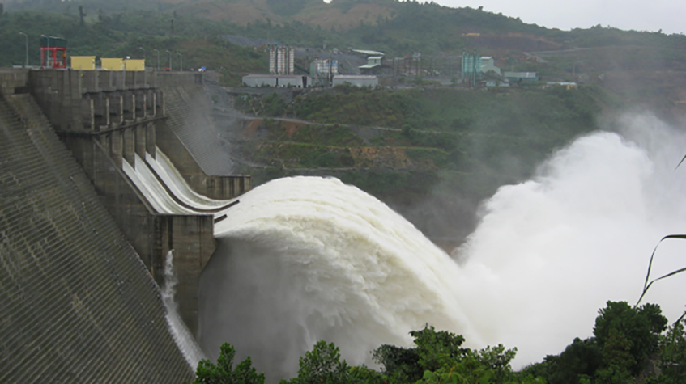
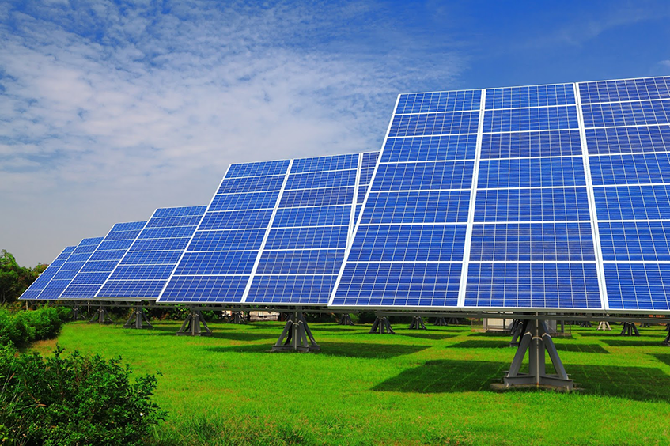
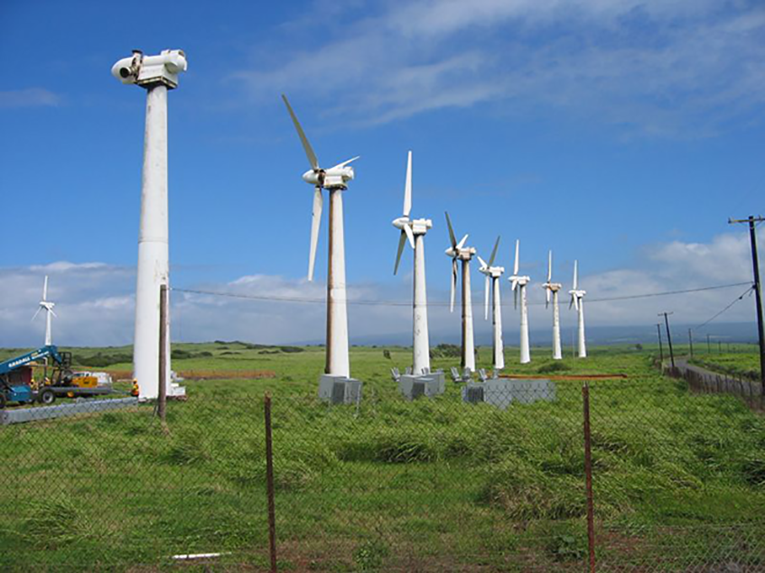

Ivy Plus s.r.o. se zaměřuje především na vývoz a podporu vývozu do Vietnamu v sektorech: energetika, strojírenství, dopravní infrastruktura a ekologická technologie.
Při provádění vývozních a konzultačních operací využíváme dlouholetých zkušeností na vietnamském trhu. Rozsáhlé obchodní i neobchodní kontakty na správných místech umožňují zajišťovat obchodní operace efektivně a úspěšně.
Vietnam, to je obrovská příležitost
Vietnam je země mnoha tváří, politicky socialistická země, hospodářsky kapitalistický tygr. Na budování kapitalismu se socialistickou tváří mají ve Vietnamu velký vliv i bývalí studenti z ČSSR.
Vietnam je zemí, která nabízí obrovské možnosti pro české exportéry i investory. Samotný vietnamský trh má 95 mil. obyvatel, ale přístup na něj otevírá možnosti umístit své výrobky na celém trhu sdružení ASEAN, který čítá cca 625 mil. obyvatel a kde funguje oblast volného obchodu AFTA a od roku 2015 bude vytvořen společný trh. Jihovýchodní Asie je pro Českou republiku prioritních oblastí, přitom Vietnam s velmi zajímavým exportním trhem a perspektivní světovou ekonomikou je klíčem k této oblasti.
Vietnam je zemí, která má bohaté přírodní bohatství, ale dosud nedobudovanou infrastrukturu dopravní i energetickou se zastaralými strojírenskými podniky. To jsou právě oblasti podnikání, kde české firmy umí celosvětově uplatnit své výrobky.
Začátkem října 2015 byla úspěšně dokončena vleklá a v posledních fázích nepřetržitá vyjednávání dohody o takzvaném Transpacifickém partnerství (TPP). Jde o největší obchodní pakt posledních desetiletí a pravděpodobný vzor všech podobných budoucích dohod. Členy Transpacifického partnerství jsou Spojené státy, Kanada, Mexiko, Peru a Chile na americké a Japonsko, Austrálie, Nový Zéland, Singapur, Malajsie, Vietnam a Brunej na asijské straně Tichého oceánu. Jedná se o svazek 12 zemí, které dohromady představují 40 procent globálního HDP a společně tvoří dosud největší světovou zónu volného obchodu a trh s 800 miliony potenciálních zákazníků.
Počátkem roku 2018 vstoupí v platnost FTA (Free Trade Agreement) mezi EU a Vietnamem. Vietnamu se na základě smlouvy více otevře evropský trh pro jeho výrobky jako je textil, obuv, zemědělské produkty, mořské plody a výrobky ze dřeva, zatímco firmy z EU budou mít snadnější přístup na vietnamský trh se stroji, zařízeními, automobily, alkoholickými nápoji a zemědělskými výrobky. Obě strany eliminují přes 99 % tarifních linek a pro zbývající budou stanoveny celní kvóty nebo částečná snížení celních tarifů.
Podnikání ve Vietnamu není jednoduché, existují zde byrokratická omezení i překážky obchodu nebo značná korupce, ale při troše trpělivosti je to trh perspektivní. Podnikat ve Vietnamu však vyžaduje jak osobní kontakt s obchodními partnery, tak pevné řízení a kontrolu všech pracovních procesů.
Vietnam je zemí, která nabízí obrovské možnosti pro české exportéry i investory. Samotný vietnamský trh má 95 mil. obyvatel, ale přístup na něj otevírá možnosti umístit své výrobky na celém trhu sdružení ASEAN, který čítá cca 625 mil. obyvatel a kde funguje oblast volného obchodu AFTA a od roku 2015 bude vytvořen společný trh. Jihovýchodní Asie je pro Českou republiku prioritních oblastí, přitom Vietnam s velmi zajímavým exportním trhem a perspektivní světovou ekonomikou je klíčem k této oblasti.
Vietnam je zemí, která má bohaté přírodní bohatství, ale dosud nedobudovanou infrastrukturu dopravní i energetickou se zastaralými strojírenskými podniky. To jsou právě oblasti podnikání, kde české firmy umí celosvětově uplatnit své výrobky.
Začátkem října 2015 byla úspěšně dokončena vleklá a v posledních fázích nepřetržitá vyjednávání dohody o takzvaném Transpacifickém partnerství (TPP). Jde o největší obchodní pakt posledních desetiletí a pravděpodobný vzor všech podobných budoucích dohod. Členy Transpacifického partnerství jsou Spojené státy, Kanada, Mexiko, Peru a Chile na americké a Japonsko, Austrálie, Nový Zéland, Singapur, Malajsie, Vietnam a Brunej na asijské straně Tichého oceánu. Jedná se o svazek 12 zemí, které dohromady představují 40 procent globálního HDP a společně tvoří dosud největší světovou zónu volného obchodu a trh s 800 miliony potenciálních zákazníků.
Počátkem roku 2018 vstoupí v platnost FTA (Free Trade Agreement) mezi EU a Vietnamem. Vietnamu se na základě smlouvy více otevře evropský trh pro jeho výrobky jako je textil, obuv, zemědělské produkty, mořské plody a výrobky ze dřeva, zatímco firmy z EU budou mít snadnější přístup na vietnamský trh se stroji, zařízeními, automobily, alkoholickými nápoji a zemědělskými výrobky. Obě strany eliminují přes 99 % tarifních linek a pro zbývající budou stanoveny celní kvóty nebo částečná snížení celních tarifů.
Podnikání ve Vietnamu není jednoduché, existují zde byrokratická omezení i překážky obchodu nebo značná korupce, ale při troše trpělivosti je to trh perspektivní. Podnikat ve Vietnamu však vyžaduje jak osobní kontakt s obchodními partnery, tak pevné řízení a kontrolu všech pracovních procesů.
Desatero pro obchodování s Vietnamem
- Trocha nedůvěry neuškodí
Nedůvěřivost Vietnamců si nesmíte brát nijak osobně, neboť ve Vietnamu se důvěřuje pouze členům rodiny a do jisté míry i dlouholetým a nejbližším přátelům. Stejná nedůvěra je na místě i z vaší strany! - Ano může znamenat i ne
Upřímnou pravdu, která je pro vás nepříjemná, neočekávejte. Namísto sdělení, že váš produkt je drahý, nebo že je nezajímavý, se vietnamský partner bude spíše vyhýbat setkání nebo nebude přijímat hovor.
Při jednání je třeba počítat se skutečností, že Vietnamci nejenže neradi přiznávají, že něčemu nerozumí, ale také neradi říkají ne. Proto je třeba si odpovědi typu "asi ano" vykládat jako "spíše ne" a "možná" jako "určitě ne". Vietnamci velmi zřídka projeví nesouhlas cestou konfrontace. Otázka typu „Je to jasné?“ nebo „Rozumíte?“ je zbytečná, neboť odpověď bude vždy „Ano!“. - Slova nemají velkou váhu
Buďte připraveni na to, že vietnamští obchodníci si často libují v nezávazných slibech a rozhodnutích. Za každé tvrzení si proto pro jistotu doplňte slovo „možná“. Větu „Až budete v Hanoji, tak mě navštivte.“ si vykládejte pouze jako zdvořilostní frázi. Domluvíte-li si schůzku déle než jeden den dopředu, je třeba termín krátce před setkáním ještě potvrdit, jinak může být schůzka považována za zrušenou. - Buďte nezávislí
K základním podmínkám úspěchu patří nejen získání dobrého partnera, ale především pevné řízení ze strany české firmy. Závislost zahraničních podnikatelů na Vietnamcích, kteří ovládají jejich řeč, je nejčastější příčinou problémů. Ve Vietnamu úspěšné korejské a japonské firmy si své projekty řídí a organizují od A do Z zásadně samy. - Emoce
Počítejte s tím, že při jednání Vietnamci příliš neprojevují své emoce a neodhalují tím své pocity. Případné nadměrné zvyšování hlasu se vnímá jako ztráta sebekontroly. - Image
Dbejte na svojí image. Zvláště při prvním setkání si váš partner bude všímat především věku, společenského postavení, jaké máte oblečení, značku telefonu atd. Zároveň se příliš nespoléhejte na svůj první dojem a dbejte na to, aby se vietnamský protějšek nedostal do trapné situace a neztratil tvář. Image – tvář je velmi důležitá. - Obchod jako boj
Západní podnikatelé předpokládají, že je v obchodování třeba dosáhnout výsledku “win-win”, tj. spokojenosti na obou stranách. Pro většinu Vietnamců je obchod vždy tvrdou hrou. Je vítěz a je poražený. Zejména od zahraničního partnera se očekává, že při obchodě či investici ve Vietnamu bude jeho zisk nulový, ne-li záporný. - Korupce
S provizním systémem se setkáte ve Vietnamu často. Zatímco ve státní firmě či úřadu je tento problém běžný, naštěstí se netýká soukromých firem. - Nepodceňujte „protivníka“
Malá znalost a nereálné představy některých českých podnikatelů o vietnamské společnosti a podnikatelském klimatu jsou bohužel velmi časté. - Patriotismus
Patriotismus je ve Vietnamu velmi silný. Není proto vhodné vyhledávat politická témata, ani poukazovat na některé nedostatky současného Vietnamu, případně vyjadřovat odpor k některým specialitám vietnamské kuchyně. Vietnamská tradice a kultura je velice vážená a adaptabilita naopak velmi nízká, což je patrné na komunitním způsobu života Vietnamců v zahraničí.
Zdroje: BusinessInfo
Máte vše prostudováno a jedete do Vietnamu nabízet své výrobky? Nebo už roky se Vám nepodařilo výrazně zlepšit Vaše obchodní a investiční záměry? K úspěšnému obchodu ve Vietnamu potřebujete kapku štěstí, společně ji najděme!
Sektorové zaměření
Energetika
V oblasti energetiky soustředíme na obnovitelné zdroje energie (hydroelektrická, solární a větrná energie, biomasa a biopaliva), jsou alternativami k fosilním palivům a přispívají ke snižování emisí skleníkových plynů, k diverzifikaci dodávek energie a ke snížení závislosti na nespolehlivých a nestabilních trzích s fosilními palivy, především s ropou a zemním plynem.
Vodní energetika
Zaměříme se zejména na malé vodní elektrárny, jejichž nové výstavbě bude předcházet důkladné posouzení dopadu na životní prostředí.

Solární energie
Solární boom v ČR prakticky skončil, ve Vietnamu ale teprve začíná. Hledáme silného a zkušeného investora na solární elektrárny, zbytek zajistíme.
Solární energie bude připojena do národní rozvodné sítě a současně bude zásobovat energií odlehlé příhraniční oblasti a ostrovy bez propojení na rozvodnou síť. Výroba solární energie se zvýší z 10 mil. kWh v roce 2015 na 1,4 mld. v roce 2020, 35,4 mld. kWh v roce 2030 a 210 mld. kWh v roce 2050. Podíl solární energie na národním energetickém mixu vzroste ze současného zanedbatelného podílu na 0,5 % v roce 2020, asi 6 % v roce 2030 a zhruba 20 % v roce 2050.
Bude současně rozvíjena výroba solárních zařízení pro vytápění domácností a s tím spojené služby. Tento druh solární energie pro domácnosti vzroste z 1,1 mil. TOE (tun ropného ekvivalentu) v roce 2020 na 3,1 mil. TOE v roce 2030 a 6,0 mil. TOE v roce 2050.
Solární energie bude připojena do národní rozvodné sítě a současně bude zásobovat energií odlehlé příhraniční oblasti a ostrovy bez propojení na rozvodnou síť. Výroba solární energie se zvýší z 10 mil. kWh v roce 2015 na 1,4 mld. v roce 2020, 35,4 mld. kWh v roce 2030 a 210 mld. kWh v roce 2050. Podíl solární energie na národním energetickém mixu vzroste ze současného zanedbatelného podílu na 0,5 % v roce 2020, asi 6 % v roce 2030 a zhruba 20 % v roce 2050.
Bude současně rozvíjena výroba solárních zařízení pro vytápění domácností a s tím spojené služby. Tento druh solární energie pro domácnosti vzroste z 1,1 mil. TOE (tun ropného ekvivalentu) v roce 2020 na 3,1 mil. TOE v roce 2030 a 6,0 mil. TOE v roce 2050.

Energie z větru
Do roku 2030 bude prioritou rozvoj větrné energie na pevnině a studium rozvoje sektoru v pobřežních vodách v budoucnu. Výkon instalovaných kapacit větrné energie vzroste ze 180 mil. kWh v roce 2015 na 2,5 mld. kWh v roce 2020, 16 mld. kWh v roce 2030 a zhruba 53 mld. kWh v roce 2050. Poměr energie z větru se v energetickém mixu zvýší ze současného 1 % na 2,7 % v roce 2030 a 5 % v roce 2050.

Biomasa
Hledáme technologie využívání biomasy k výrobě vodní páry pro použití v papírenském průmyslu.
Jiné aktivity
V současné době Ivy Plus s.r.o. také dováží a distribuje prestižní výrobky pro Českou a Slovenskou republiku, je výhradním distributorem značky Romoss a Fiveplus.